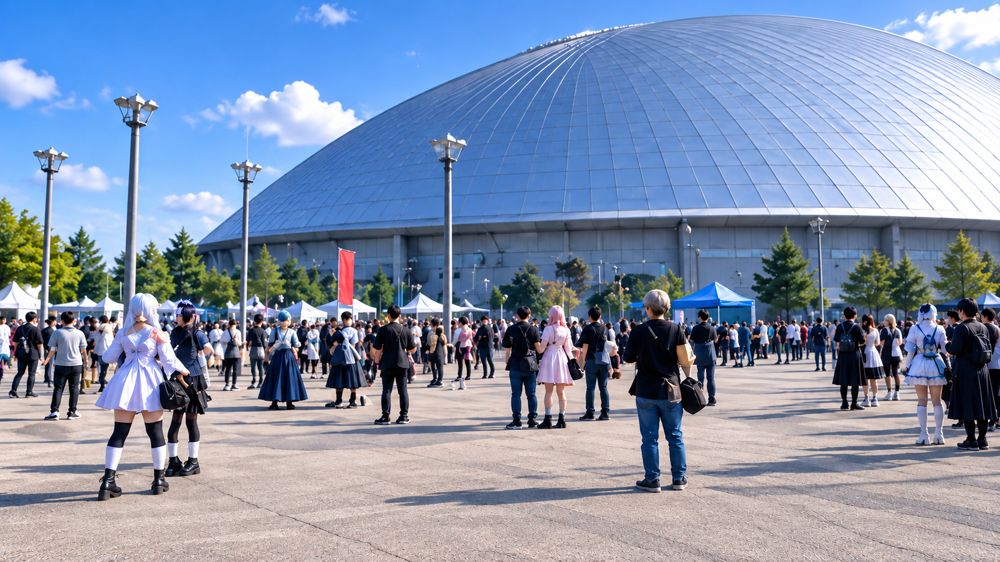

🔊
NOW LOADING...
CHUDOME GAME DATA
タップして開始
MABOX
presents
Ver. 6.36
COSPLAY PHOTOGRAPHER ADVENTURE
ちゅどーむに消ゆ
― 野良カメコ・マボの一日 ―
タップしてスタート
本作品はフィクションです。登場する人物・団体・イベントおよび出来事は架空のものであり、実在のものとは関係ありません
M
MABOX
© 2026 MABOX
PROLOGUE
09:18

ちゅどーむ、到着。
札幌のコスプレイベント。
野良のコスプレカメラマン、マボは今日も一人で会場へ来た。
（今日こそ……「また撮ってください」って言われる写真を撮る。できればSNSにも載せてもらう。いや、まず普通に会話を成立させろ俺。）
会場には、レイヤーとカメラマン、それぞれの思惑が渦巻いている。
何気ない一言が、数時間後の評判を変えることもある。
▶ 会場へ入る
ちゅどーむ 会場マップ
撮影済 0 / 5人
10:00 レイヤー評判：無名
会場全体図
レイヤーさんをタップして移動
あや
入口ホール
雪奈
屋外
みく
休憩
カレン
東側
りお
屋内撮影
黒田たち
中央通路
会場マップ上のレイヤーさんをタップすると、その場所へ移動します。
本日の撮影を終了する
会場
10:20
会場のカメコたち
要注意
黒田
機材マウント型
田中
知り合い自慢型
リョウ
距離感バグ型
ヒデ
写真見せつけ型
マボ
会場には色々なカメラマンがいる。
（俺は……あいつらとは違う。たぶん。違うよな？）
マップへ戻る
あと 6 / 6 枚
◀ 左へ
ポーズ調整中……
右へ ▶
寄る
中央
引く
あと 6 / 6 枚
SHUTTER
写真を選ぶ
1枚選択
撮影した六枚から一枚を選ぶ。
この写真を選ぶ
翌日
タイトルに戻る
タイトルに戻る


 黒田機材マウント型
黒田機材マウント型 田中知り合い自慢型
田中知り合い自慢型 リョウ距離感バグ型
リョウ距離感バグ型 ヒデ写真見せつけ型
ヒデ写真見せつけ型